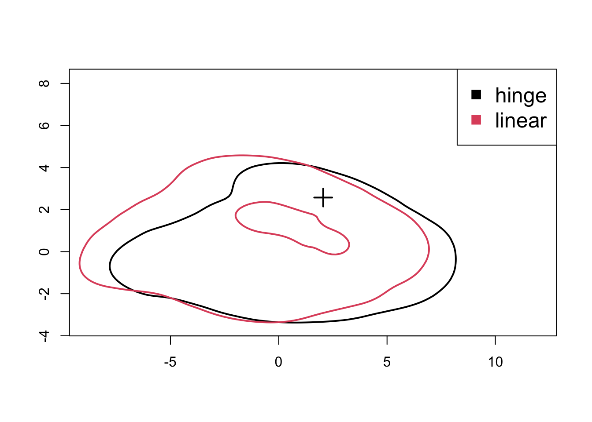
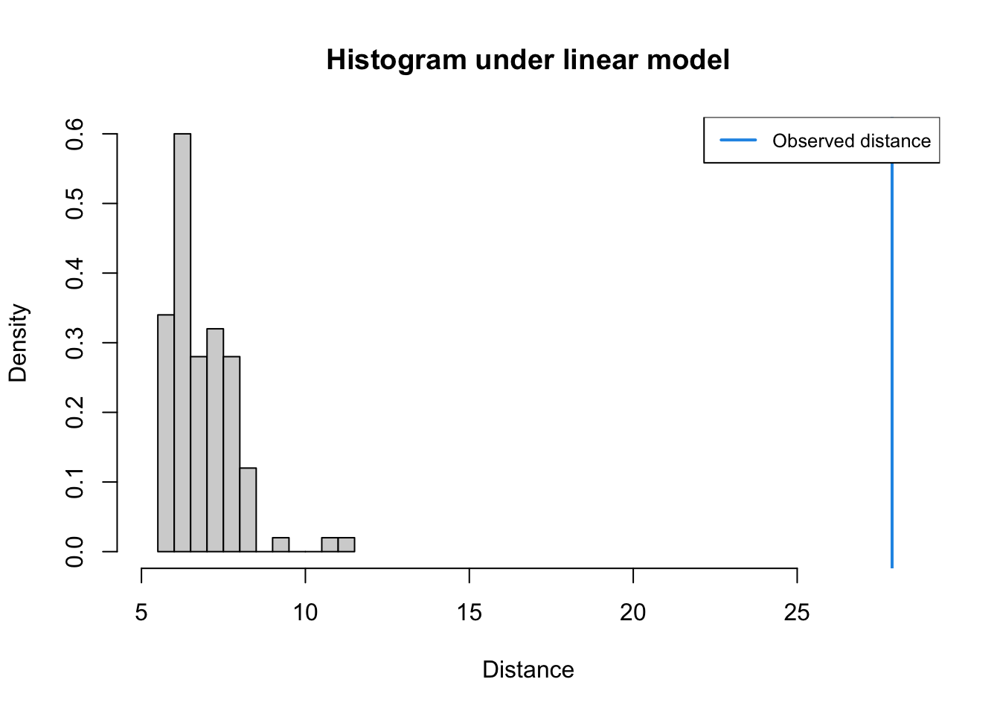
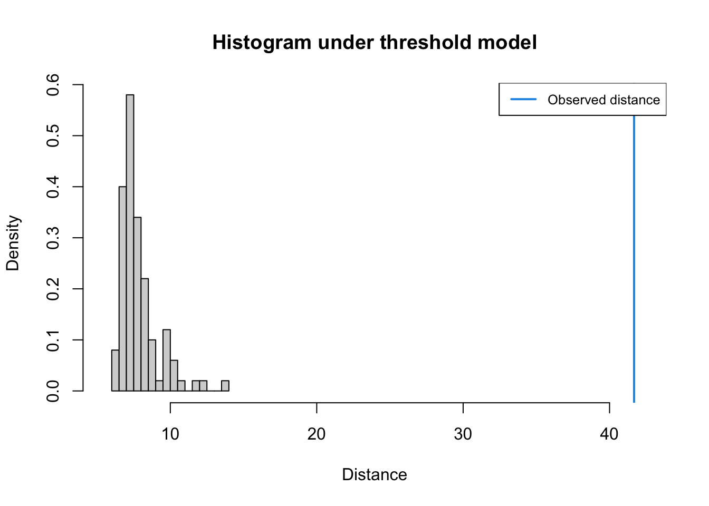

library(tidyverse)
library(abc)
library(here)abc_analysis
Approximate Bayesian Computation Analysis
Setup
# read in sumstats
## iheringii
### Simulations
lin_ihe_paths <- list.files(here("analysis", "output", "simulations"), pattern = "linear", full.names = TRUE)
lin_ihe <- map_df(lin_ihe_paths, read_csv) %>%
mutate(transformation = "linear")
hinge_ihe <- read_csv(here("analysis", "output", "simulations", "sims_2023-11-20_hinge.csv")) %>%
mutate(transformation = "hinge")
sims_ihe <- bind_rows(lin_ihe, hinge_ihe) %>%
# fill in the missing param values
group_by(param_id) %>%
fill(ancestral_n, total_inds_curr) %>%
fill(ancestral_n, total_inds_curr, .direction = "up") %>%
ungroup()
### Empirical
empirical_ihe <- read_csv(here("analysis", "output", "empirical_sumstats", "iheringii_sumstats.csv")) %>%
dplyr::select(-num_var)
## catenatusExploration
PCA
E. iheringii
pca_df_ihe <- sims_ihe %>%
dplyr::select(
starts_with("sfs"),
"taj_d",
starts_with("pi"),
starts_with("ibd"),
"morans_i"
)
pca_ihe <- prcomp(pca_df_ihe, center=TRUE, scale. = FALSE)
pca_df_ihe <- bind_cols(pca_ihe$x, sims_ihe)
ggplot(pca_df_ihe, aes(x = PC1, y = PC2, color = transformation)) +
geom_point(alpha = 0.5) +
scale_color_viridis_d() +
theme_bw()
ABC
Model Selection
E. iheringii
Model selection to assess discriminatory ability among simulations.
sumstats_ihe <- sims_ihe %>%
dplyr::select(
starts_with("sfs"),
"taj_d",
starts_with("pi"),
starts_with("ibd"),
"morans_i"
)
cv_modsel_ihe <- cv4postpr(sims_ihe$transformation, sumstats_ihe, nval = 500, tol = 0.05, method="mnlogistic")
summary(cv_modsel_ihe)Confusion matrix based on 500 samples for each model.
$tol0.05
hinge linear
hinge 376 124
linear 121 379
Mean model posterior probabilities (mnlogistic)
$tol0.05
hinge linear
hinge 0.6966 0.3034
linear 0.3049 0.6951Model selection using the empirical data and a rejection algorithm.
modsel_emp_ihe <- postpr(empirical_ihe, sims_ihe$transformation, sumstats_ihe, tol=.05, method="mnlogistic")
summary(modsel_emp_ihe)Call:
postpr(target = empirical_ihe, index = sims_ihe$transformation,
sumstat = sumstats_ihe, tol = 0.05, method = "mnlogistic")
Data:
postpr.out$values (451 posterior samples)
Models a priori:
hinge, linear
Models a posteriori:
hinge, linearWarning: Posterior model probabilities are corrected for unequal number of
simulations per models.
Proportion of accepted simulations (rejection):
hinge linear
0.3156 0.6844
Bayes factors:
hinge linear
hinge 1.0000 0.4595
linear 2.1761 1.0000
Posterior model probabilities (mnlogistic):
hinge linear
1 0
Bayes factors:
hinge linear
hinge 1 1
linear 1 1Goodness-of-fit
E. iheringii
PCA
gfitpca(empirical_ihe, sumstat=sumstats_ihe, index=sims_ihe$transformation, cprob=.1)
Goodness-of-fit test linear.
ss_lin_ihe <- bind_cols(sumstats_ihe, transformation = sims_ihe$transformation) %>%
filter(transformation == "linear") %>%
dplyr::select(-transformation)
gof_linear <- gfit(target=empirical_ihe, sumstat=ss_lin_ihe, statistic=mean, nb.replicate=100)
plot(gof_linear, main="Histogram under linear model")
Goodness-of-fit test hinge.
ss_hinge_ihe <- bind_cols(sumstats_ihe, transformation = sims_ihe$transformation) %>%
filter(transformation == "hinge") %>%
dplyr::select(-transformation)
gof_hinge <- gfit(target=empirical_ihe, sumstat=ss_hinge_ihe, statistic=mean, nb.replicate=100)
plot(gof_hinge, main="Histogram under threshold model")
Empirical summary statistics
empirical_ihe %>% knitr::kable(digits = 3)| sfs_h1 | sfs_h2 | sfs_h3 | pi | taj_d | pi_pop_2704 | pi_pop_2821 | pi_pop_2825 | pi_pop_2833 | pi_pop_2924 | pi_pop_2925 | pi_pop_2937 | pi_pop_3039 | pi_pop_3135 | pi_pop_3139 | pi_pop_3146 | pi_pop_3152 | pi_pop_3252 | pi_pop_3357 | pi_pop_3800 | pi_pop_3902 | pi_pop_3913 | pi_pop_4111 | pi_pop_4114 | pi_pop_4227 | pi_pop_4237 | pi_pop_4670 | pi_pop_4671 | pi_pop_4892 | pi_pop_5000 | pi_pop_6527 | pi_pop_8725 | pi_pop_10257 | ibd_r2 | ibd_slope | morans_i |
|---|---|---|---|---|---|---|---|---|---|---|---|---|---|---|---|---|---|---|---|---|---|---|---|---|---|---|---|---|---|---|---|---|---|---|---|
| 0.311 | 0.19 | 0.157 | 0.157 | -0.688 | 0.105 | 0.078 | 0.132 | 0.067 | 0.053 | 0.049 | 0.127 | 0.107 | 0.089 | 0.074 | 0.085 | 0.08 | 0.139 | 0.09 | 0.09 | 0.07 | 0.091 | 0.066 | 0.05 | 0.104 | 0.064 | 0.108 | 0.09 | 0.095 | 0.06 | 0.038 | 0.061 | 0.043 | 0.031 | 0.007 | 0.116 |